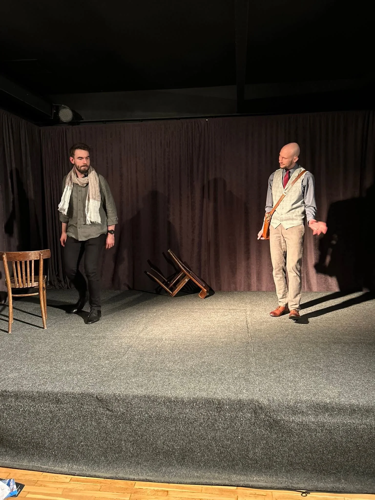
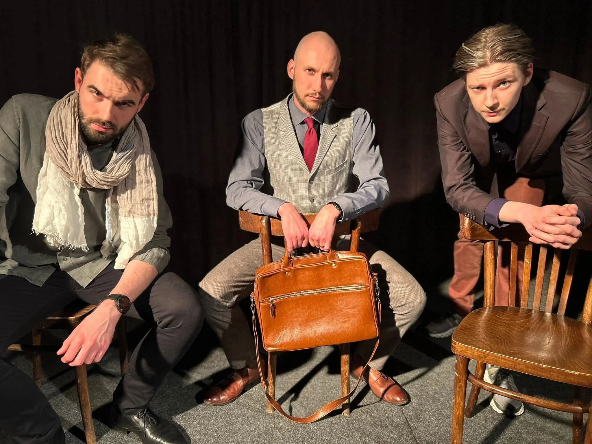
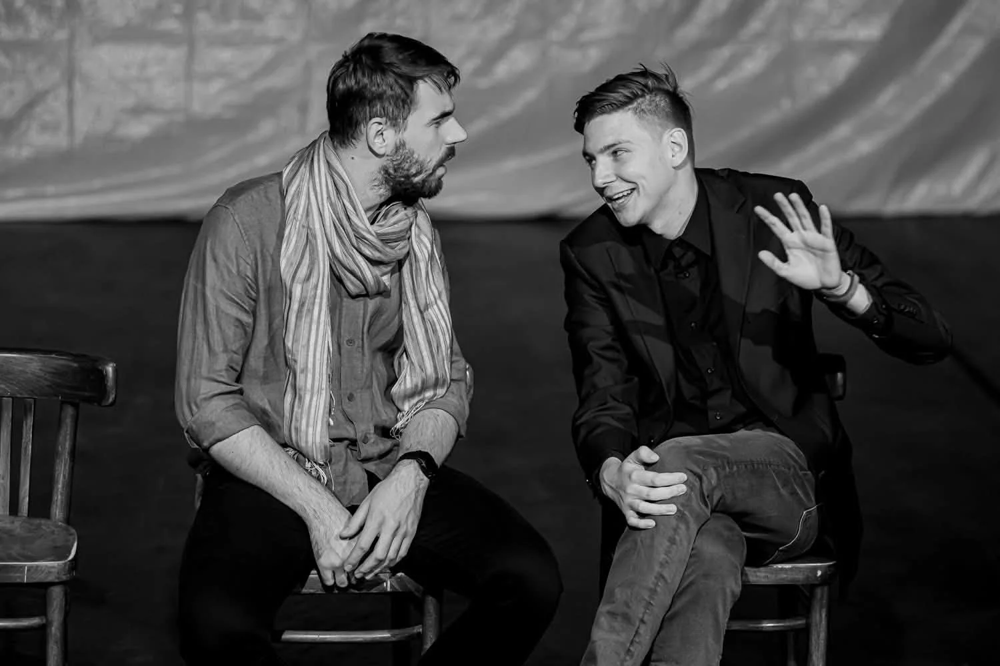

Teatr Otczapy
Scenariusz dla trzech aktorów autorstwa Bogusława Schaeffera to spektakl Teatru Otczapy z Wrześni. Zespół działa przy Wrzesińskim Ośrodku Kultury.
- Spektakl teatralny
- 75 minut
- Września, Polska
Wideo (YouTube)
Galeria



O spektaklu
„Scenariusz dla trzech aktorów" to komedia Bogusława Schaeffera, w której reżyser oraz dwóch aktorów usiłują zrobić próbę do swojej najnowszej sztuki. Każdy z nich ma inny charakter, ale każdy jest na swój sposób narcystyczny i egoistyczny, co często powoduje napięcie między bohaterami. Wiele sytuacji zakrawa o absurd, a artyści mieszają wizje z rzeczywistością. Poruszają istotę samego teatru oraz sensu istnienia sztuki przeplatając to prozą życia.
O zespole
Teatr Otczapy działa we Wrzesińskim Ośrodku Kultury. Powstał w 2011 roku i od tego czasu przygotował około dziesięciu spektakli.
Zespoły festiwalowe
Rozwiń listę zespołów
Partnerzy festiwalu